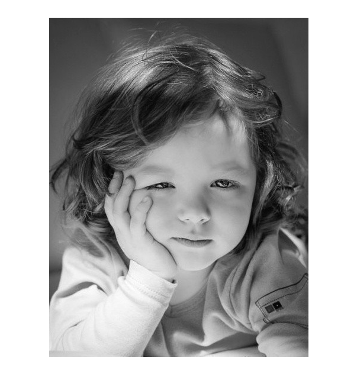

clear all;
close all;
clc;
img=imread('460.jpg');
img=rgb2gray(img);
[m, n, l]=size(img);
imshow(img);
r=10;
imgn=zeros(m+2*r,n+2*r);
imgn(r+1:r+m,r+1:r+n)=img;
imgn(1:r,r+1:r+n)=img(1:r,1:n);
imgn(1:m+r,n+r+1:n+2*r)=imgn(1:m+r,n+1:n+r);
imgn(m+r+1:m+2*r,r+1:n+2*r)=imgn(m-r+1:m,r+1:n+2*r);
imgn(1:m+2*r,1:r)=imgn(1:m+2*r,r+1:2*r);
sigma_d=2;
sigma_r=0.1;
[x,y] = meshgrid(-r:r,-r:r);
w1=exp(-(x.^2+y.^2)/(2*sigma_d^2));
h=waitbar(0,'wait...');
for i=r+1:m+r
for j=r+1:n+r
w2=exp(-(imgn(i-r:i+r,j-r:j+r)-imgn(i,j)).^2/(2*sigma_r^2));
w=w1.*w2;
s=imgn(i-r:i+r,j-r:j+r).*w;
imgn(i,j)=sum(sum(s))/sum(sum(w));
end
waitbar(i/m);
end
close(h)
figure;
imshow(mat2gray(imgn(r+1:m+r,r+1:n+r)));
